Confidential | For Training Purposes Only
Lab 5 - Microsegmentation#
Lab Overview#
Lab time: 40 minutes
In the previous labs, we built a fabric, attached switches, and added integrations with vSphere and the PSM. There are several workload VMs running in each lab and during this lab, we will levarage the integrations to build firewall policies to microsegment the workloads from each other.
Lab 5.1 - Create Endpoint Group for Workloads#
Description#
In this task, you will create 2 endpoint groups. An endpoint group in Fabric Composer is a set of VMs that have the same set of policy rules.
Validate#
Using the AFC, select Policy and then Enpoint Groups from the top level menu
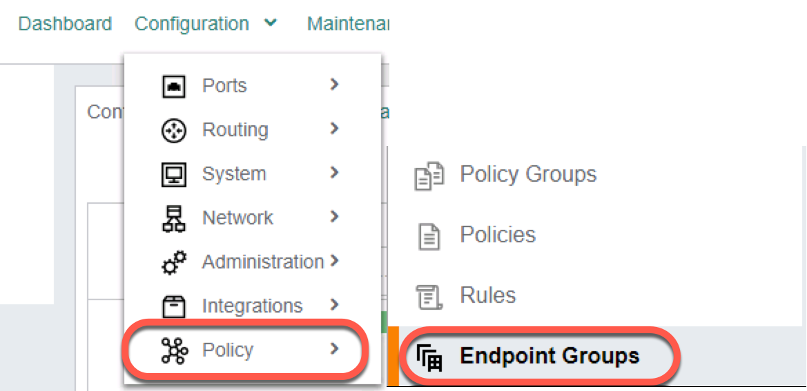
Fig. Lab 5 Endpoint Groups Menu
From the ACTIONS menu, select Add
If there are existing endpoint groups, just ignore them.
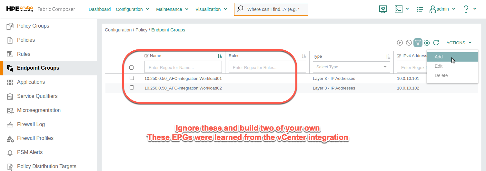
Fig. Lab 5 Add Endpoint Group
Create an Endpoint Group for Workload01
Step 1 - Name |
|
Name |
WL-group-01 |
Description |
(optional) |
Click NEXT |
Step 2 - Type |
|
Type |
Layer 3 - IP Address |
Click NEXT |
Step 3 - Endpoints |
|
VM/VNIC/VMKernel Endpoint |
Yes (selected) |
Criteria |
VM Tag* (select from the pull down menu) |
VM Tag |
|
VNIC |
Select any Network Adapter 2 with |
Scroll down, click ADD, NEXT and APPLY |
Look for your workload number and verify it is assigned to your lab group!
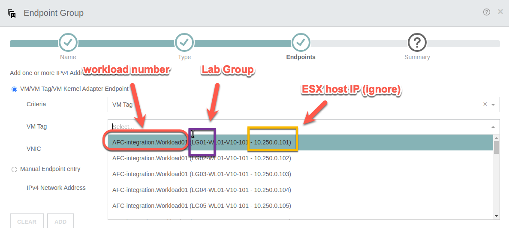
Fig. Choose Wisely
From the ACTIONS menu, select Add to create an Endpoint Group for Workload02
Step 1 - Name |
|
Name |
WL-group-02 |
Description |
(optional) |
Click NEXT |
Step 2 - Type |
|
Type |
Layer 3 - IP Address |
Click NEXT |
Step 3 - Endpoints |
|
VM/VNIC/VMKernel Endpoint |
Yes (selected) |
Criteria |
VM Tag* (select from the pull down menu) |
VM Tag |
|
VNIC |
Select any Network Adapter 2 with |
Scroll down, click ADD, NEXT and APPLY |
Expected Results#
The Endpoint Groups should have been created based on VM Tag and visible in the list.
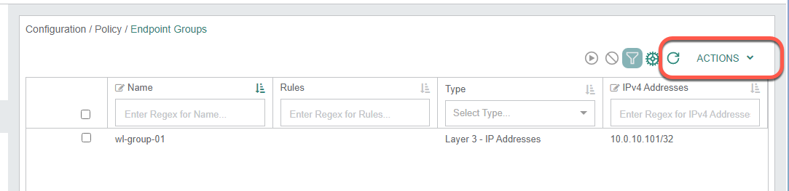
Fig. Two complete Endpoint Groups
Lab 5.2 - Create Firewall Rule#
Description#
When enabling Microsegmentation, an explicit Deny All rule is placed at the bottom of the rule list, which acts as a catch all. For the purpose of these labs and in order to test the Switch Firewalling functionality, we will place an Allow All rule at the bottom, and add specific Deny rules above it.
Validate#
Using the AFC, select Policy and then Rules from the top level menu, or if still visible, select Rules from the left menu.
From the ACTIONS menu, select Add to add a new Rule
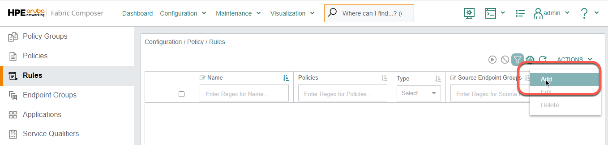
Fig. Lab 5 Add Endpoint Group
Step 1 - Name |
|
Name |
allow_all_v10 |
Description |
(optional) |
Click NEXT |
Step 2 - Settings |
|
Type |
Layer 3 |
Action |
Allow |
Click NEXT |
Step 3 - Endpoint Groups |
|
Source Endpoint Groups |
|
Destination Endpoint Groups |
|
Click NEXT |
Step 4 - Applications and Service Qualifiers |
|
Applications |
(leave empty) |
Service Qualifiers |
(leave empty) |
Click NEXT |
|
Review the summary and APPLY |
Expected Results#
The Allow All rule should be successfully created and visible in the list of Rules.
Lab 5.3 - Create Firewall Policy#
Description#
Firewall Rules are placed in Policies and are enforced in a top to bottom fashion. We will create a Policy in this lab, and assign our Allow All rule to it.
Validate#
Using the AFC, select Policy and then Policies from the top level menu, or if still visible, select Policies from the left menu.
From the ACTIONS menu, select Add to add a new Rule 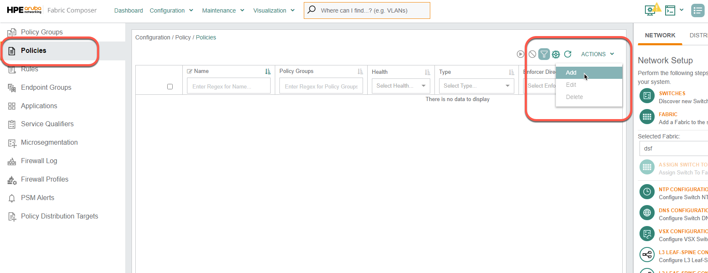
Fig. Adding a policy
Step 1 - Name |
|
Name |
dsf-leafLG01 |
Description |
(optional) |
Click NEXT |
Step 2 - Settings |
|
Type |
Distributed Firewall * |
Click NEXT |
Note
For other CX switches, that are non CX-10K, you can use this same procedure to configure L2 or L3 ACLs
Step 3 - Rules |
Go to ACTIONS / ADD / Existing (top right of this form) |
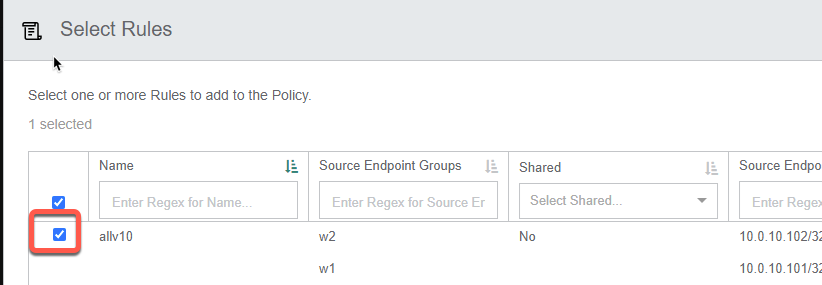 |
Click APPLY |
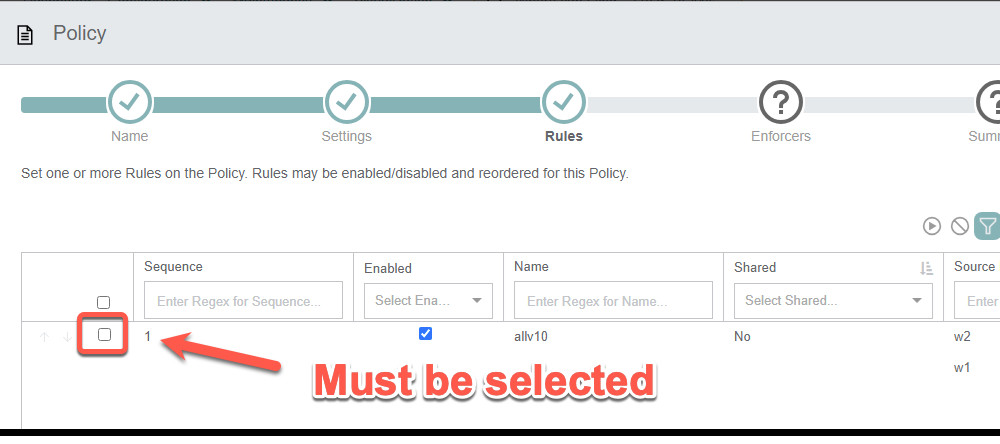 |
If you don’t select this there will only be an implicit deny all rule in the policy and nothing will ping! |
Click NEXT |
Step 4 - Enforcers |
||
Fabric |
dsf |
|
Policy Distribution Target Type |
Select LEAF from the dropdown |
|
Direction |
Egress (direction is selected from the point of view of the workload/host) |
|
VRF |
default |
|
Networks |
Select ADD on the right side of this option to add the network (one or more VLANs) |
|
Sub-step A - Name |
||
Name |
VLAN10 |
|
Description |
(optional) |
|
Click NEXT |
||
Sub-step B - Settings |
||
VLAN |
10 |
|
Click NEXT |
||
Review the Summary and APPLY |
||
Scroll down, click ADD (at bottom of dialog) and NEXT |
||
Review the Summary and APPLY |
Expected Results#
The newly created Policy should appear in the Policy list (see screenshot below).
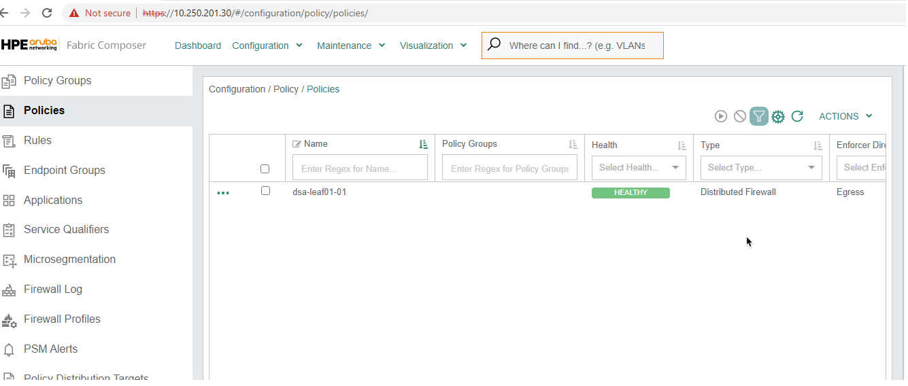
Fig. Lab 5 Policy List
Lab 5.4 - Configure Microsegmentation#
Description#
A microsegmentation is a set of configurations starting with a private/isolated VLAN on the host that extends to the switch. On the switch, that VLAN is redirected to the Pensando DSM processor for policy enforcement.
We will use the Microsegmentation Configuration in Fabric Composer which will:
Creates, on the host:
A Distributed Virtual Switch
Two Port Groups: one for the private primary VLAN and another for the isolated VLAN
Creates, between the host and the Switches:
A Link Aggregation Group transporting that VLAN (as a promiscuous port)
Validate#
Using the AFC, we will use the Guided Setup menu on the right side. Go to DISTRIBUTED SERVICES and select CONFIGURE MICROSEGMENTATION
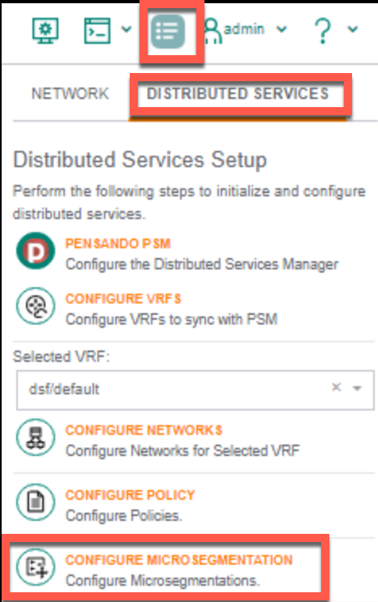
Fig. Lab 5 Configure Microsegmentation
Step 1 - Settings |
|
Name (dvswitch) |
dsf-leafLG (LG = Lab Group Number) |
Host |
Enter the address of your host (see table below) |
NICs |
vmnic6 and vmnic7 |
Click ADD and NEXT |
Lab Group |
vSphere Host |
Lab Group |
vSphere Host |
|---|---|---|---|
01 |
10.250.0.101 |
06 |
10.250.0.106 |
02 |
10.250.0.102 |
07 |
10.250.0.107 |
03 |
10.250.0.103 |
08 |
10.250.0.108 |
04 |
10.250.0.104 |
09 |
10.250.0.109 |
05 |
10.250.0.105 |
10 |
10.250.0.110 |
Step 2 - PVLAN |
|
Portgroup Name Prefix |
dsf-leafLG (LG = Lab Group Number) |
Primary VLAN |
10 |
Primary VLAN NICS |
(do NOT select any) |
Isolated VLAN |
11 |
Isolated VLAN NICS |
Click SELECT VNICS |
Scroll down, select both Network Adapter 2 with IP address: |
|
Note: workloads must be connected to the isolated VLAN |
|
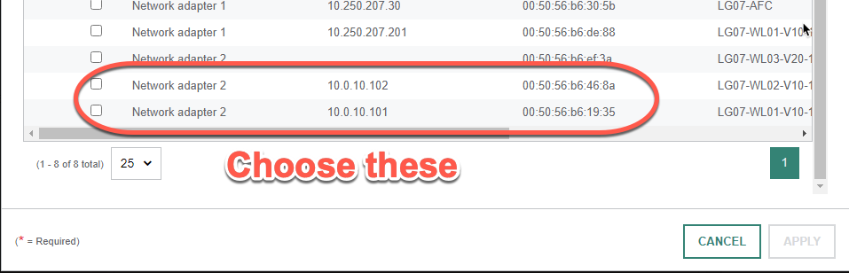 |
| Click NEXT | |
Step 3 - Fabric |
|
Fabric |
dsf |
Click NEXT |
Step 4 - LAGs |
|
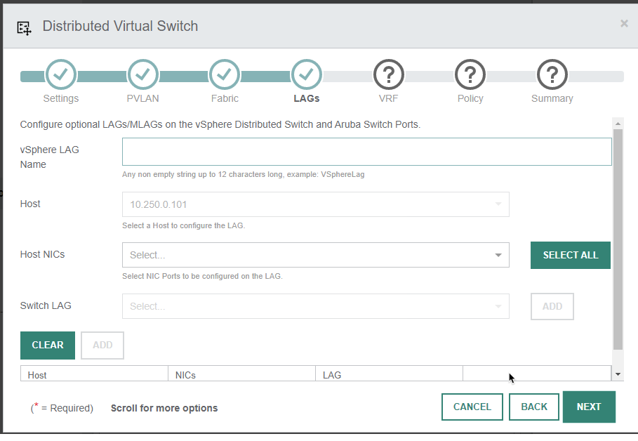 |
|
vSphere LAG Name |
dsf_lag_lgLG |
Host |
(pull down menu and use the pre-populated address) |
Host NICS |
vmnic6 and vmnic7 |
Switch LAG |
Click ADD on the right to configure the LAG on the CX10k VSX pair |
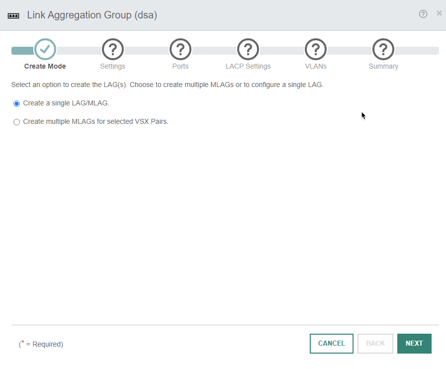
Sub-step A - Settings |
||
Create Mode |
Create a single LAG/MLAG (default) |
|
Click NEXT |
||
Name |
|
|
Description |
(optional) |
|
LAG Number |
31 |
|
Inter-Switch Link |
Check it! (if not greyed out) |
|
Click NEXT |
||
Sub-step B - Ports |
||
LAG Switch Member |
|
Note
Select the LAG Switch Member and then click the small picture icon as highlighted in the following screenshot to view the port selection on the switches
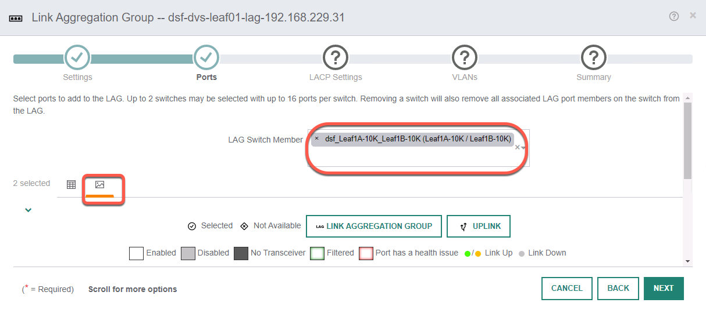
Note
Select the switch ports as highlighted in the following screenshot
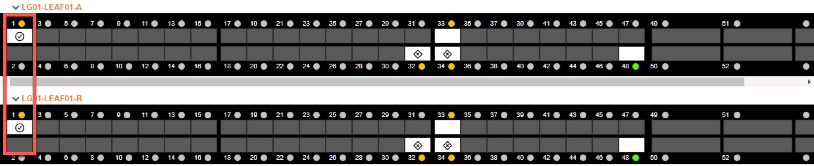
Click NEXT after port selection (see screenshots above) |
||
Sub-step C - LACP Settings |
||
Review and click NEXT |
||
Sub-step D - VLANs |
||
VLANs |
10,11 (should be populated) |
|
Click NEXT and APPLY |
||
In the DVS Task main window, click ADD at the bottom left |
Step 5 - VRF |
Leave emtpy and click NEXT |
Step 6 - Policy |
Leave emtpy and click NEXT |
Step 7 - Summary |
Review the Summary and click APPLY |
Expected Results#
To confirm that Microsegmentation has been properly configured, click Visualization / Hosts from the top menu.
On the left side fo the map, under Settings, you can use the Zoom Out function until you can see the whole diagram. Also under Settings, select Name Truncation: None
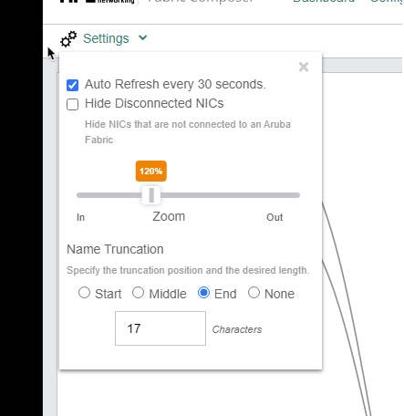
Fig. Lab 5 Diagram Settings
Check the diagram to verify the connections and make sure you are looking at your specific Lab Group.
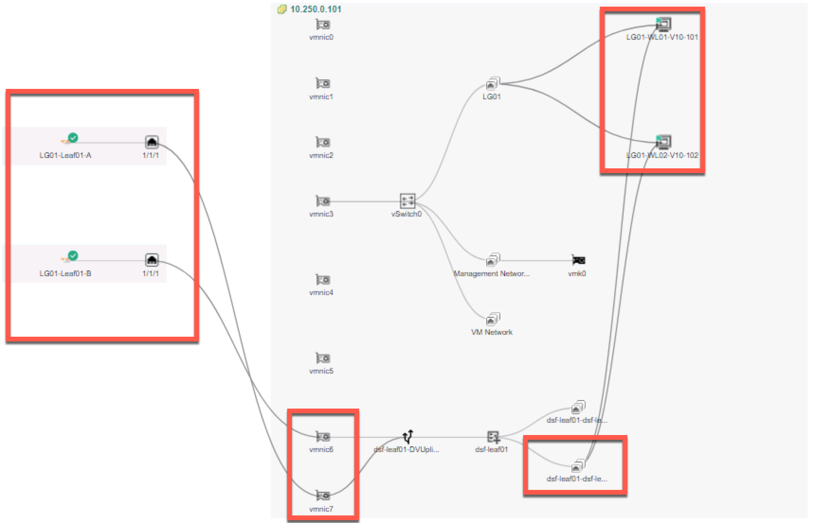
Fig. Lab 5 Host Visualization
Note
The VMs are connected to the Isolated VLAN 11 port group. And now you see the switch connections
Lab 5 Summary#
During this lab, we enabled microsegmentation on the CX 10000 switches
We created Endpoint Groups for each of the workloads running in the lab
We used VM Tags for matching to demostrate how to create dynamic firewall rules
We created an Allow All firewall rule
We created a firewall policy and added the Allow All rule to that policy
We use the AFC to activate Microsegmentation
We created a Private VLAN and added our test workload vNICs to this new Private VLAN to ensure VM isolation
Lab 5 Learning Check#
Endpoint Groups can be created manually or automatically learned from VMware
Rules are added to policies.
Policies are atuomatically sent to the AMD Pensando Policy Services Manager(PSM)
PSM programs the DPU chips on the HPE Aruba CX 10000 switch